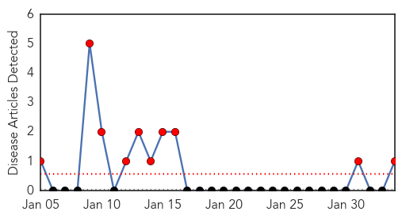
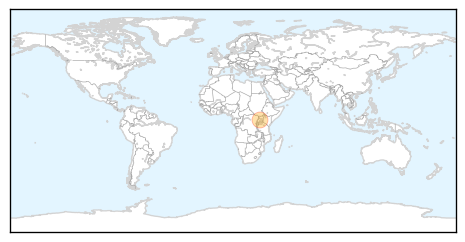

Ebola
30-Day Web Trend
10 alerts, 0 warnings

30-Day Twitter Trend
0 alerts, 0 warnings

Article Locations
Article Confidences

Top Articles:
Top Tweets:
-
No tweets found for Feb 03, 2014
Influenza
30-Day Web Trend
10 alerts, 4 warnings

30-Day Twitter Trend
1 alerts, 0 warnings

Article Locations

Article Confidences

Top Articles:
- 0.995
- Doctor visits for flu are decreasing
- 0.990
- Canada is watching rapidly mounting H7N9 case count, but still feels risk is low
- 0.989
- Flu death toll climbs to 12 in Southern Nevada
- 0.977
- NEW: Rhode Island’s First Flu-Related Deaths of Season Reported
- 0.977
- CDC Director: China Bird Flu Outbreak Closely Watched
- 0.954
- 2013-14 flu season: Some hospitals lift flu-related restrictions on visitors as illness eases
- 0.948
- Canada monitoring as number of H7N9 bird flu cases mount
- 0.854
- Black Death Likely Altered European Genes
- 0.806
- Queensland researchers begin development of system to detect disease outbreaks online
Top Tweets:
-
No tweets found for Feb 03, 2014